3 Reliability and Security
Physical media contain our data, but what matters is the integrity of the data, not of the memory units themselves. The threats from which we must protect data are of three types:
- Data loss: if a memory device is subject to a failure (electrical or mechanical), usually all the data contained within it are lost.
- Data corruption: certain environmental factors (lowering of the input voltage, increase in ambient temperature, cosmic radiation) can cause a bit-flip, that is the inversion of a bit. For HDDs, on average there is a bit-flip every \(10^{14}\) bits involved in read or write cycles. A 10 TB read therefore spans roughly \(10^{14}\) bits — meaning a single full scan of a 10 TB disk could produce one silent, undetected data corruption.
- Transfer errors: occur when there are no adequate checks in the copy or transfer of data.
Reliability corresponds to the probability that a system will continue to operate correctly beyond a certain period of time or a certain number of operations.
In quantitative terms:
- MTTF (Mean Time To Failure): the average time that elapses between the first power-on of the device and the moment a failure occurs.
- MTBF (Mean Time Between Failure): defined for repairable systems, the average time that elapses between one failure and the next.
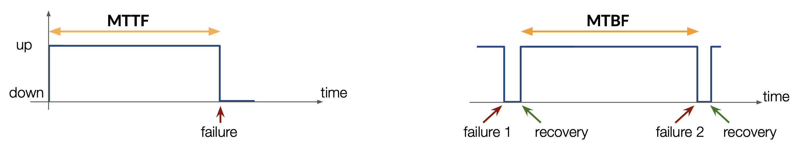
3.0.1 Failure Rate Lifecycle: The Bathtub Curve
The failure rate of hardware components is not constant over time. It follows a characteristic pattern known as the bathtub curve:
Failure
Rate
│
│\ /│
│ \ Early failures / │
│ \ (burn-in) / │ Wearout
│ \____________________________/ │
│ Standard operations │
└──────────────────────────────────────┴─── Time- Early failure period (burn-in): newly deployed components have an elevated failure rate due to manufacturing defects; these typically manifest within the first hours or days of operation.
- Useful life period: failure rate is low and roughly constant; this is the expected operating lifetime quoted by manufacturers.
- Wearout period: as components age, mechanical wear, electromigration, and cell degradation cause the failure rate to rise again.
MTTF and MTBF statistics are measured during the useful life period and do not capture burn-in or wearout behaviour.
Realistically, the MTTF of an HDD is about ten years. Assuming an equally distributed probability of failure:
\[p = \frac{1}{10 \cdot 365} = 0.00027\]
Considering \(5000\) independent HDDs:
\[5000 \cdot 0.00027 = 1.35\]
So, on average, it is expected that every day an HDD will fail and have to be replaced. At CERN, with \(\sim 100\,000\) HDDs in daily use, that translates to about \(27\) damaged memory units per day.
3.1 Reliability Strategies
To store data securely, three main strategies are used:
- Mirroring: the data are replicated on different devices, sometimes located in different places.
- Striping: the data are divided into “pieces” and distributed on different memory elements.
- Checking: errors relating to the consistency of the data within the devices are identified (and possibly corrected), such as a checksum or a parity check.
The basis on which to apply these strategies is the so-called disk redundancy, indicated by the acronym RAID (Redundant Array of Independent Disks), in which multiple devices are combined to form a single logical device in order to improve reliability and performance.
RAID can be implemented entirely in software without dedicated hardware. On Linux, the mdadm utility manages software RAID arrays:
# Create a RAID 5 array across three devices
mdadm --create /dev/md0 --level=5 --raid-devices=3 /dev/sdb /dev/sdc /dev/sdd
# Check array status
mdadm --detail /dev/md0Software RAID is less expensive than hardware RAID controllers and is widely used in commodity server deployments.
3.1.1 RAID 0
| Property | Value |
|---|---|
| Strategies | Striping (no mirroring, no checking) |
| Min. disks | 2 |
| Total capacity | Lowest single disk capacity × number of disks |
| Throughput | Conditioned by simultaneous read/write from all disks |
Prioritizes performance over reliability — losing a disk implies losing all data.
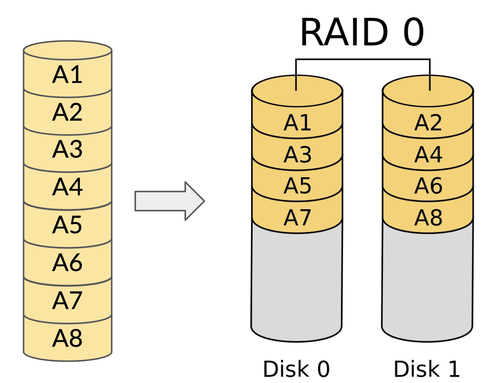
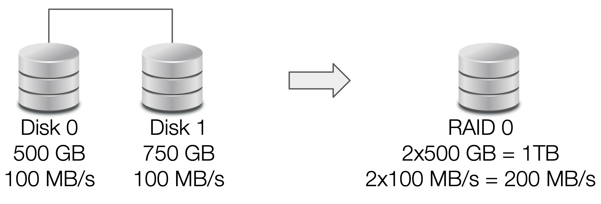
3.1.2 RAID 1
| Property | Value |
|---|---|
| Strategies | Mirroring (no striping, no checking) |
| Min. disks | 2 |
| Total capacity | Lowest single disk capacity |
| Throughput | Throughput of the single lowest disk |
Prioritizes reliability over performance — data is safe as long as at least one disk is operational.
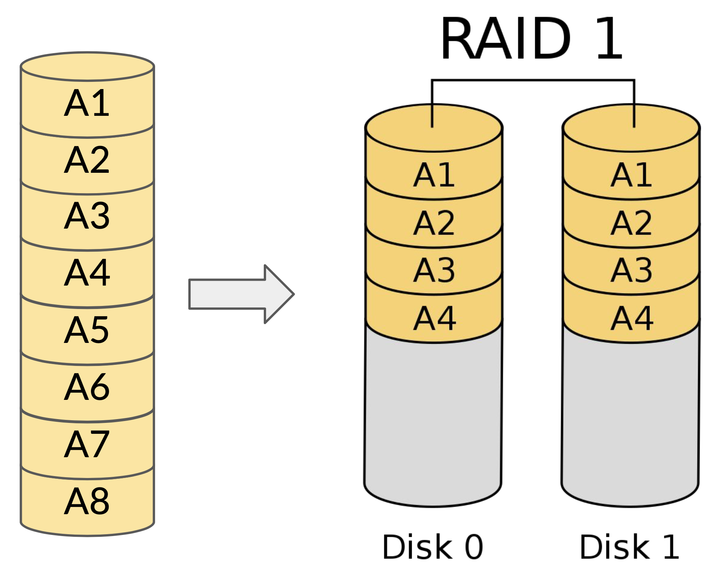
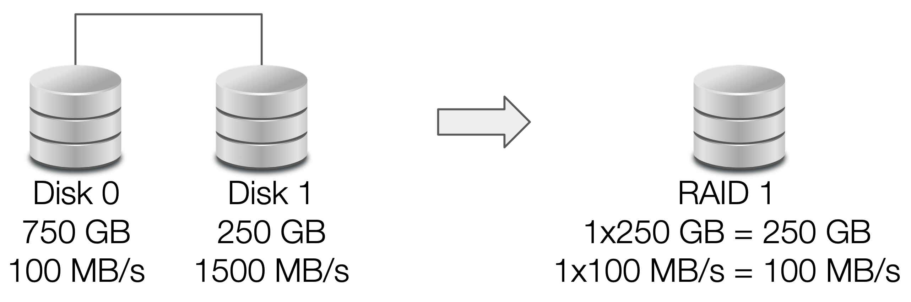
3.1.3 RAID 1+0
| Property | Value |
|---|---|
| Strategies | Mirroring and striping (no checking) |
| Min. disks | 4 |
| Total capacity | Lowest RAID 1 unit capacity × number of RAID 1 units |
| Throughput | Read: RAID 0 speed (fast); Write: RAID 1 speed (slow) |
Maintains the high performance of RAID 0 while improving reliability with mirroring.
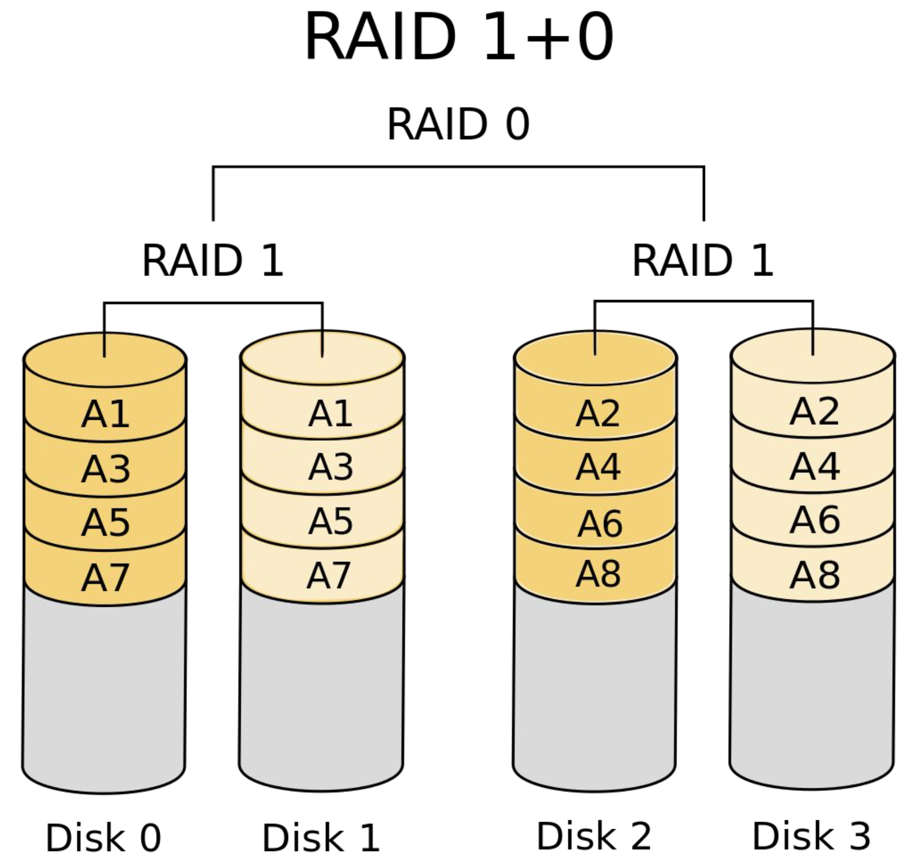
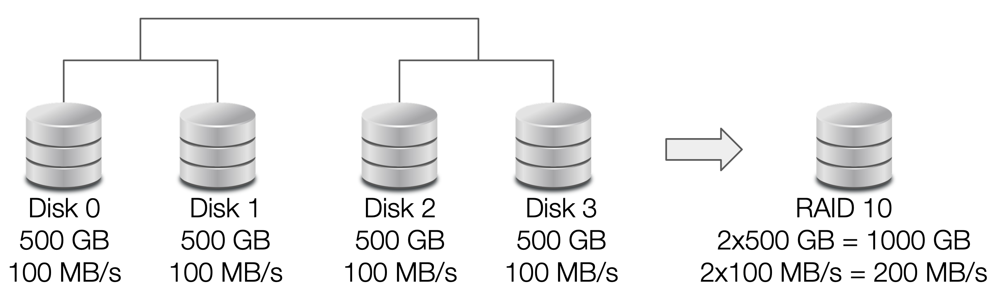
3.1.4 RAID 5
| Property | Value |
|---|---|
| Strategies | Striping and parity checking (no mirroring) |
| Min. disks | 3 |
| Total capacity | Lowest single disk capacity × (number of disks − 1) |
| Throughput | Non-trivial due to parity read/write overhead |
A portion of each disk is “sacrificed” in favor of parity information, so the data can be recovered if a single disk fails. The parity is calculated through a chain of XORs:
\[p = D_1 \oplus D_2 \oplus \dots \oplus D_n\]
Parity recovery by XOR inversion:
XOR is self-inverse: A ⊕ B ⊕ B = A. If disk D2 fails, the missing data is recovered as:
\[D2 = p \oplus D1 \oplus D3\]
Concrete 4-bit example:
| Block | Bits |
|---|---|
| D1 | 1010 |
| D2 | 1100 (failed) |
| D3 | 0111 |
| p = D1 ⊕ D2 ⊕ D3 | 0001 |
Recovery: p ⊕ D1 ⊕ D3 = 0001 ⊕ 1010 ⊕ 0111 = 1100 ✓
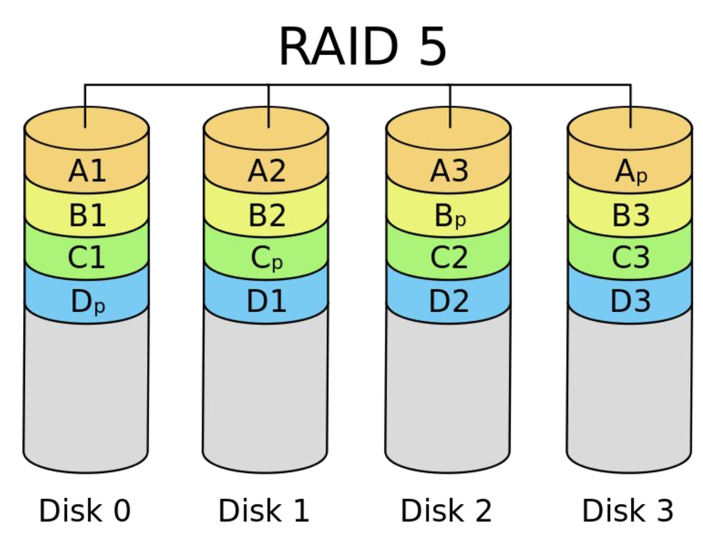
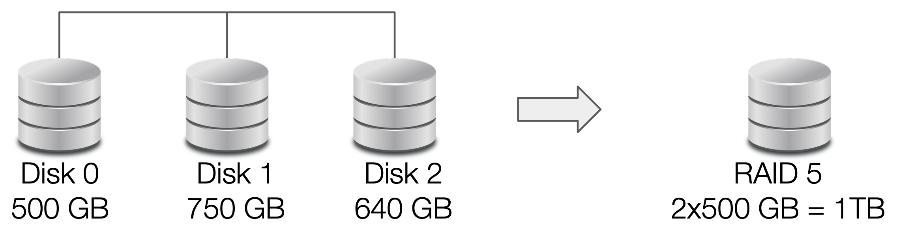
3.1.5 RAID 6
| Property | Value |
|---|---|
| Strategies | Striping and parity checking (no mirroring) |
| Min. disks | 5 |
| Total capacity | Lowest single disk capacity × (number of disks − 2) |
| Throughput | Non-trivial due to parity read/write overhead |
A portion of two disks is “sacrificed” in favor of the parity information, encoded in two bits per section. In order for the data to be recoverable after the failure of two disks, these parity bits must be linearly independent — the Reed-Solomon code is the most famous solution:
\[p = D_1 \oplus D_2 \oplus D_3\] \[q = D_1 \oplus (D_2 \ll 1) \oplus (D_3 \ll 2)\]
where \(p\) is the standard XOR parity (identical to RAID 5) and \(q\) is a second independent parity computed using Galois-field bit-shifts (≪). Because \(p\) and \(q\) are linearly independent, the system has enough information to solve for any two simultaneously failed disks — RAID 6 tolerates any two disk losses without data loss.
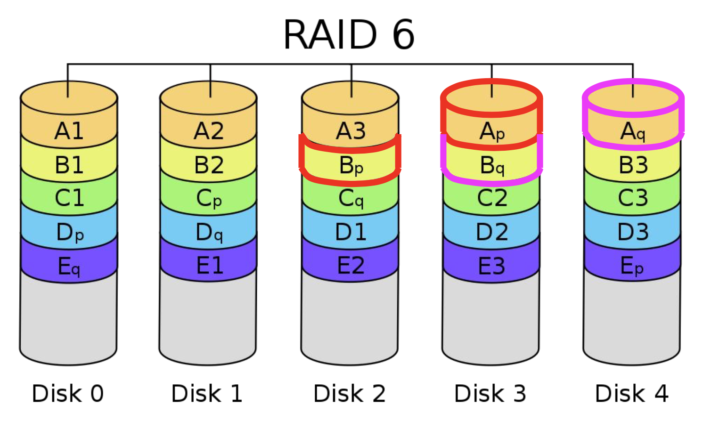
3.2 Cryptography
Cryptography is a field of mathematics that deals with encoding information in order to make it secure and intelligible only to people authorized to access it.
The main actions involving security are:
- Protect the data saved on a device
- Establish secure connections with remote servers
- Exchange information between two peers
- Prevent malicious users from tampering with the data
For a message exchange to be considered secure, we must answer the following questions:
- Am I sure I know who I’m talking to?
- Can someone else intercept the data? (Yes — it is always possible. This is the basis of the security systems to be implemented.)
- Is the message I received identical to the one sent?
- Is the user I am talking to responsible for the message sent?
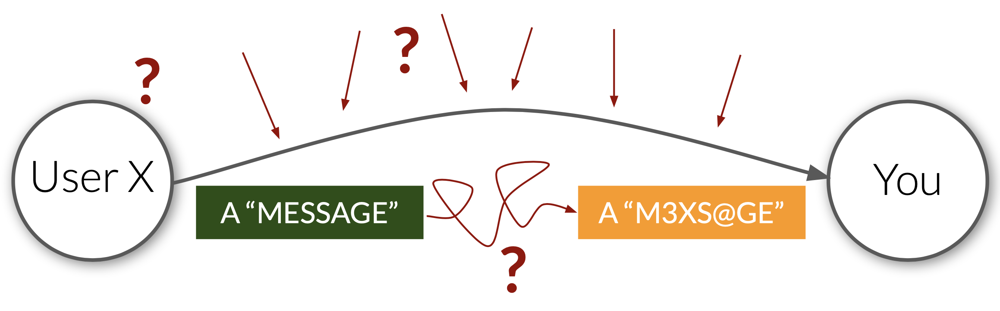
The main concepts of cryptography in data management:
- Confidentiality: ensuring that no one can extract information even by intercepting the entire conversation.
- Integrity: ensuring that the message has not been modified during the transfer.
- Authenticity: verifying that you are communicating with the entity you think is at the other end.
- Identity: verifying the identity of the specific individual.
- Non-repudiation: ensuring that the individual responsible for a certain activity cannot deny being associated with it.
The five properties can be summarised as follows:
| Property | Description |
|---|---|
| Confidentiality | Information is accessible only to authorised parties |
| Integrity | Data has not been altered without authorisation |
| Authenticity | The identity of the communicating party is verified |
| Identity | The ability to uniquely identify an entity in the system |
| Non-repudiation | A party cannot deny having performed an action |
3.4 Encoding and Decoding of Information
All messages exchanged through computer tools are constantly exposed. The only way to prevent information from being extracted is to modify the message so that an interceptor cannot understand it.
The most basic idea is to apply a mask — called a key — to the message, which shuffles and reassembles it. In cryptography these actions are called encrypting and decrypting.
Symmetric key encryption (private-key cryptography) uses a single shared key (applied for example via XOR or AES-128/192/256). It is simple to implement but both parties must share the same key, which is a security risk.
Asymmetric key encryption (public-key cryptography) uses two keys: a public key for encrypting and a private key for decrypting. They are produced together by the same algorithm (RSA, ECC, etc.) so that from one key it is impossible to derive the other. The public key is made openly available; only the intended recipient can decrypt with their private key. This is slower computationally but far more secure, and is today considered the standard.
| Category | Algorithms |
|---|---|
| Symmetric | AES-128, AES-192, AES-256 |
| Asymmetric | RSA, ECC (Elliptic Curve Cryptography) |
| Hashing | MD5 (deprecated), SHA-1 (deprecated), SHA-2 family (SHA-256, SHA-512) |
Symmetric algorithms are fast and suitable for bulk data encryption once a secure channel is established. Asymmetric algorithms are slower but allow secure key exchange without a pre-shared secret. Hashing algorithms are one-way and produce a fixed-length digest regardless of input size.
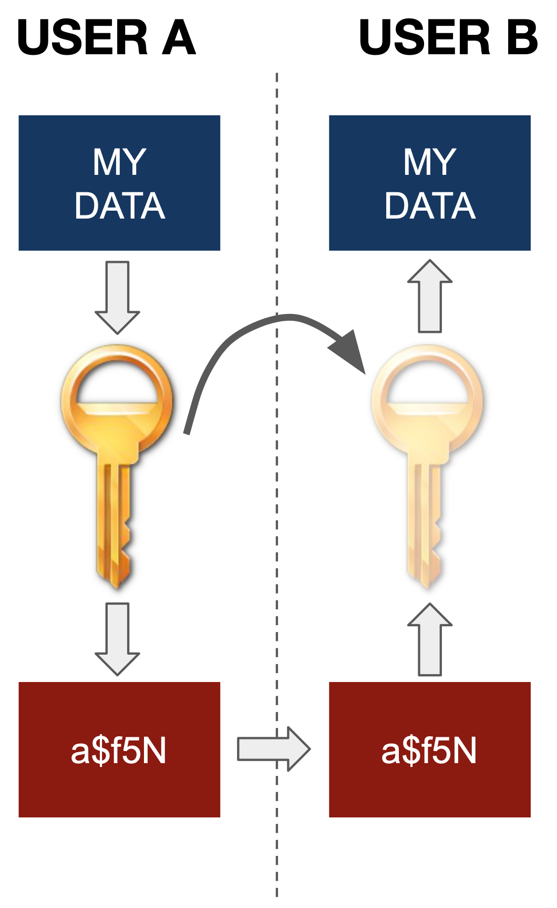
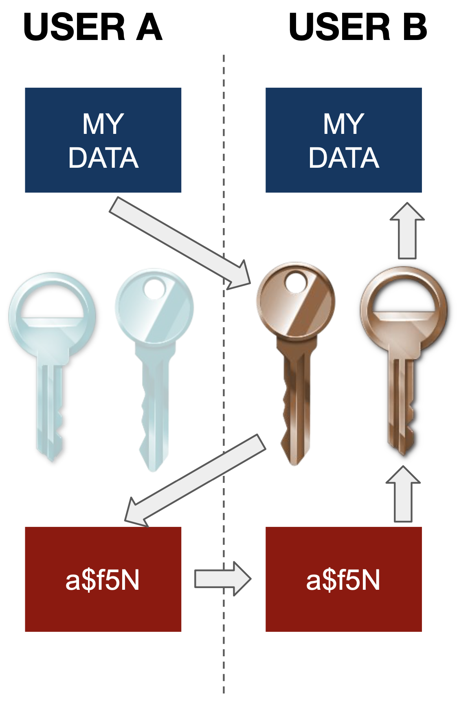
Asymmetric key authentication is the standard mechanism for connecting to remote Linux servers. A typical connection to a cloud VM using a private key:
ssh -i ~/private/my_private_key.pem ubuntu@10.67.22.231When the server is behind a gateway (jump host), use the -J flag:
ssh -J gate.cloudveneto.it -i ~/private/my_private_key.pem ubuntu@10.67.22.231The private key file must have restricted permissions (chmod 400). The server stores only the corresponding public key in ~/.ssh/authorized_keys.
3.5 Hash Functions
Hash functions apply hashing to the data — scrambling them to the point that the original form can no longer be reproduced. Hashing algorithms (MD5, SHA-1, SHA-2) produce a digest of fixed length for all inputs. Modifying the input even slightly will completely change the final digest.
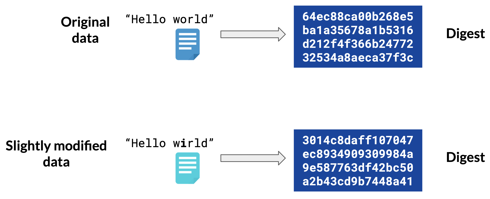
A hash function maps an infinite input space to a finite output space (for example, \(2^{256}\) possible digests for SHA-256). By the pigeonhole principle, collisions must therefore exist in theory: given enough distinct inputs, at least two will always map to the same digest. A cryptographically secure hash function does not eliminate collisions — it makes finding them computationally infeasible, meaning no practical algorithm can produce a collision in a tractable amount of time.
What the algorithms must prevent are hash collisions — cases in which two different data sets give rise to the same digest — since the uniqueness of each digest is their primary purpose.
The three main uses of hashing:
- Data protection: sensitive data such as passwords are stored as hashes, not in plaintext. Authentication systems compare input hashes with stored hashes.
- Data integrity check: comparing the hash of a received file with the expected hash confirms that the file was not tampered with during transfer.
- Digital signatures: due to their uniqueness and irreproducibility, hashes are used to certify documents stored in digital systems.
3.6 Encryption vs Hashing: Summary
| Encryption | Hashing | |
|---|---|---|
| Reversible? | Yes (with key) | No (one-way function) |
| Purpose | Confidentiality — protect data in transit/at rest | Integrity — verify data has not changed |
| Output size | Same order as input | Fixed size (e.g. 256 bits for SHA-256) |
| Key required? | Yes (symmetric) or key pair (asymmetric) | No |
| Use when | Storing sensitive data, securing communications | Storing passwords, verifying file integrity, digital signatures |
| Examples | AES-256, RSA, ECC | SHA-256, SHA-3, bcrypt |
3.7 Exercises
Define mirroring, striping, and parity check. Discuss the pros and cons of each technique, and compare them in terms of reliability in RAID configurations.
Solution. (To be completed.)
What is the performance impact of using RAID 0 vs RAID 1? What factors should be considered when choosing between them?
Solution. (To be completed.)
How does RAID 0 increase data throughput, and what are the risks associated with this configuration?
Solution. (To be completed.)
You have five disks with sizes \(x_1, x_2, x_3, x_4, x_5\). If you arrange them in a RAID 5 system, what will be the usable storage capacity of the system? Express the answer in terms of the individual disk sizes.
Solution. (To be completed.)
Can you store the parity of a data block on the same disk as the data block itself? Explain your answer in the context of RAID reliability.
Solution. (To be completed.)
You have a RAID 6 configuration with 5 disks. What is the usable storage capacity of the filesystem (expressed as a fraction of total raw capacity)? How many disks can fail simultaneously without data loss?
Solution. (To be completed.)
Compare RAID 10 and RAID 6 in terms of pros and cons regarding storage efficiency and reliability (fault tolerance).
Solution. (To be completed.)
You are tasked with choosing a RAID configuration to store a 3.5 TB dataset. You have 6 disks available with the following capacities:
| Disk | Capacity (TB) |
|---|---|
| Disk-0 | 1.0 |
| Disk-1 | 1.0 |
| Disk-2 | 1.2 |
| Disk-3 | 1.5 |
| Disk-4 | 1.5 |
| Disk-5 | 1.8 |
The dataset needs to be stored with high reliability and fault tolerance. Which RAID configuration would you choose, and why? Consider both the storage requirements and fault tolerance.
Solution. (To be completed.)
Arrange the following 6 disks in a RAID 10 configuration:
| Disk | Capacity (GB) | Throughput (MB/s) |
|---|---|---|
| 0 | 750 | 120 |
| 1 | 640 | 200 |
| 2 | 500 | 250 |
| 3 | 640 | 150 |
| 4 | 1000 | 120 |
| 5 | 720 | 160 |
- How can the 6 disks be arranged into mirrored pairs?
- What is the estimated overall usable storage capacity?
- How many disks can fail without incurring data loss in this configuration?
Solution. (To be completed.)
What is the difference between encryption and hashing? Why are both techniques important and useful for ensuring data security? Give an example use case for each.
Solution. (To be completed.)
What are the differences between symmetric and asymmetric encryption? In what scenarios is each type preferable?
Solution. (To be completed.)
How can data be compromised in an asymmetric key encryption scheme? Describe at least two attack vectors or points of failure.
Solution. (To be completed.)
What common methods are used for protecting data confidentiality in network communications? Name and briefly describe at least three techniques.
Solution. (To be completed.)
What is the difference between authentication and authorisation? Provide a concrete example illustrating the distinction.
Solution. (To be completed.)
What is integrity in data security, and what strategies can be used to ensure it? Describe at least two mechanisms used in practice.
Solution. (To be completed.)
Describe how confidentiality can be ensured through cryptographic techniques. What properties must a secure encryption algorithm have?
Solution. (To be completed.)
How could confidentiality be ensured in a Cloud system that contains sensitive data about patients? What technical and organisational measures would you implement?
Solution. (To be completed.)
You are tasked with defining the strategy to manage and share with others (e.g., physicists) a large dataset of potentially sensitive data, such as records of hospital patients. What techniques and strategies would you consider effective? Consider data access control, anonymisation, encryption, and audit trails.
Solution. (To be completed.)
What is a hash collision? Why do we want to avoid it, and is it totally avoidable? How do modern hash functions (e.g. SHA-256) minimise the probability of collisions?
Solution. (To be completed.)
What is the role of parity checks and checksums in data management? In what contexts are they used, and what are their limitations?
Solution. (To be completed.)
Answer the following two sub-questions:
(a) Imagine your password is hashed via the SHA-256 algorithm and it contains 10 characters drawn from a standard alphanumeric character set (letters a–z, A–Z, digits 0–9: 62 characters total). A hacker can try 1,000 different hash combinations per hour. How much time does it take for the hacker to crack your password in the worst case?
(b) If you use SHA-256 hashing on a text and an algorithm can guess at a rate of \(2 \times 10^{18}\) guesses per second, how long will the algorithm take in the worst case to find the original input? (Recall that SHA-256 produces a 256-bit digest, giving \(2^{256}\) possible hash values.)
Solution. (To be completed.)